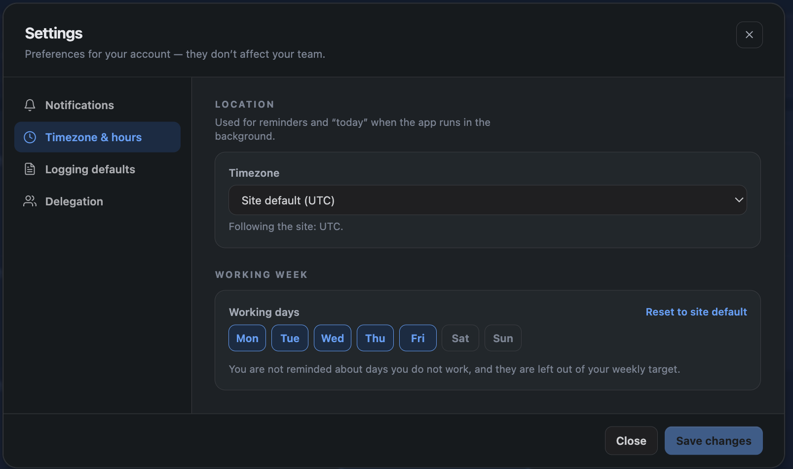
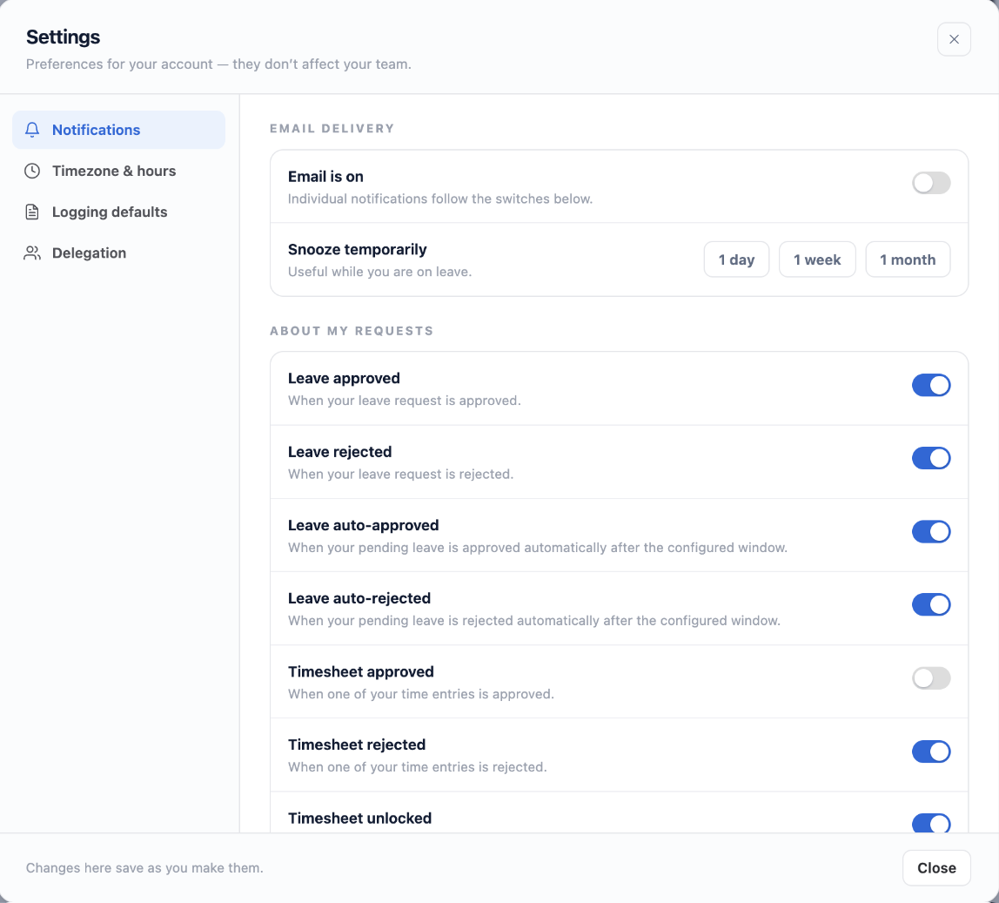

Your own settings, which affect only you. Nothing here changes anybody else's experience.
1. Opening your settings
From the Hub, open your personal settings. Site-wide configuration is a separate screen and needs administrator rights — see Admin Settings.

2. Timezone
Your timezone decides which calendar day an entry belongs to, and when the lock window closes for you. Someone in Auckland should not lose access to a day before their colleague in Lisbon.
If you have not set one, it is derived from where you last logged time, falling back to the site default.
3. Working days
Which days count as working days for you. This drives your capacity and which days are flagged as missing. Useful for part-time patterns that differ from the site default.
4. Logging defaults
Pre-fill the project, cost centre or duration you use most, so the common case is one click rather than four.
5. Notification preferences
Choose which emails you receive, per category. Turning one off does not turn it off for anybody else.

6. Mute and snooze
Mute stops a category until you turn it back on. Snooze stops everything for a period — for when you are on leave and do not want a reminder about the timesheet you deliberately have not filled in.
Scheduled reports you are explicitly listed on still arrive, because somebody chose to send them to you. See Scheduled Reports.